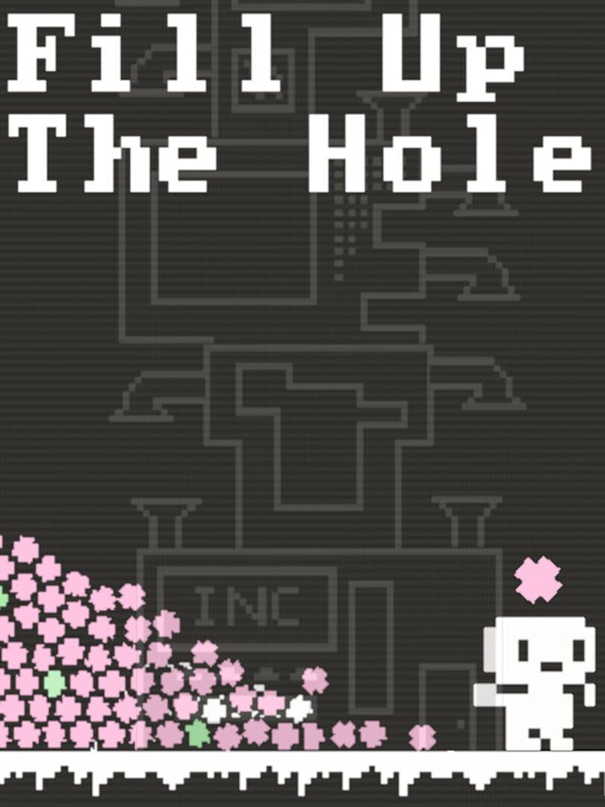

Fill Up The Hole
Fill Up The Hole
Details
|  | |
| Playtime | 5h 3m 0s |
| Last Activity | 2025-09-15 15:07:07 |
| Added | 2025-09-15 17:07:14 |
| Modified | 2025-09-15 17:07:20 |
| Completion Status | Completed |
| Library | Steam |
| Source | Steam |
| Platform | |
| Release Date | 2025-07-17 |
| Community Score | |
| Critic Score | |
| User Score | |
| Genre | Indie Simulator Strategy |
| Developer | Fluffy Lotus |
| Publisher | Fluffy Lotus |
| Feature | Single Player |
| Links | Uknown Uknown Uknown |
| Tag | |
Description
Fill Up The Hole is a short incremental game where you help peons create as much garbage as possible and toss it into a hole. Watch your village grow and evolve as you unlock visual upgrades and new features.
Throw Garbage
Your peons automatically gather garbage and throw it into the hole. The more they throw, the more progress you make!
Create a Village
Expand your village, put your peons to work, and maximize the amount of garbage produced and thrown.
Upgrade
Unlock upgrades and abilities to enhance your buildings and peons.
Gameplay
Produce trash in different ways
Find the best way to put it in the hole
Acquire different resources and upgrades
Multiple Strategies
Expand your base by taking the time to remove rocks
Create and upgrade different buildings
The order of the buildings can make a difference
Enhance the abilities of your peons
Gain new research, talents, and skills
Features
10+ unique buildings
Skill tree of upgrades to explore
Experiment with different strategies
Short experience (around 2h30m playthrough)
Two endings
Extended and relax mode (for players who prefer a longer or more idle experience)
.